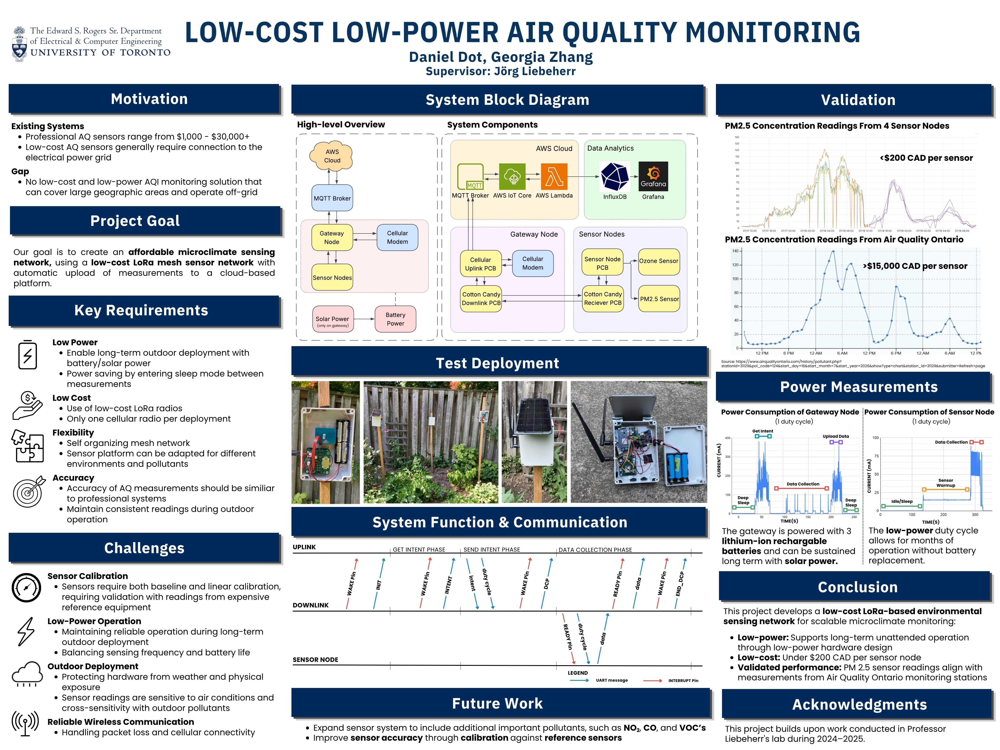

An ESP32 + SIM7080G cellular gateway built for a LoRa mesh air-quality sensor network deployed at Toronto's Meadoway. The gateway collects readings from the mesh, buffers and manages them locally, and publishes them to the cloud over a cellular uplink.